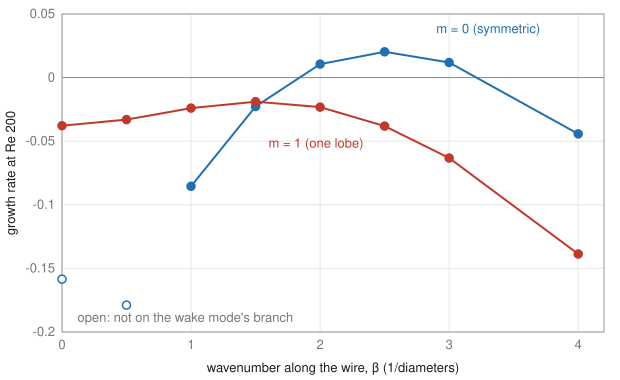
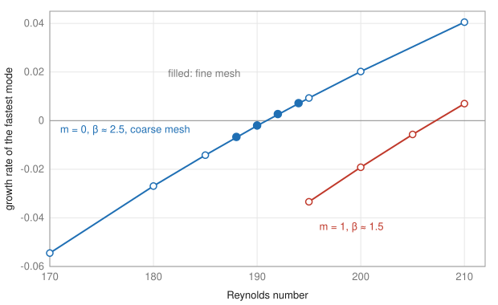
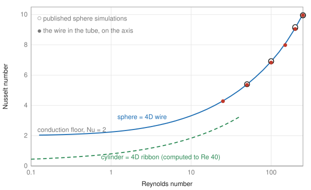
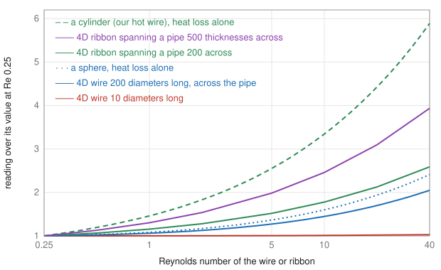

A hot wire in four dimensions
We take the hot-wire anemometer, a heated wire across a pipe whose cooling measures the flow, into a space of four dimensions and ask what changes. Three things do. First, a wire across a 4D stream is, at each place along it, a sphere in a 3D stream, and its wake has an instability that a sphere's cannot have: a steady ripple along the wire, appearing at a Reynolds number of 191, before the sphere's own first instability at 212. Second, because a sphere loses heat to still fluid at a finite rate, the 4D wire has a conduction floor that the stream only adds to, and it is a blunt instrument where ours is sharp: at a Reynolds number of 1 its heat loss changes by 0.09% for each 1% of flow, against about 0.32% for a wire in our world. Third, the body that behaves in 4D as our hot wire does here is not a wire but a ribbon. The general statement is that a body senses a stream as the ball it is across the stream, so the good anemometer in any dimension is the body the flow can go round in exactly two directions. We give the 4D pipe's laminar relations, a heat-loss computation checked against published sphere results to 1%, and a complete instrument model: current in, resistance out, with the wall's cooling of the wire and the stream's profile along it.
1. The question
A hot-wire anemometer is a fine wire stretched across a flow and heated by a current. The stream cools it, its resistance falls, and the current needed to hold the resistance is the reading. King's law, that the heat loss goes as a constant plus the square root of the speed, has described it since 1914 [K].
We ask what this instrument is in four spatial dimensions. Nothing here can be tested in a laboratory. The interest is in which familiar facts about wakes and hot wires belong to the number of dimensions and which to the shape of the body, and the answers turn out to be clean enough to state.
Lengths are in wire diameters and the Reynolds number Re is on the wire's diameter and the speed of the stream it sits in, unless said otherwise. The fluid is incompressible with constant properties and Prandtl number 0.7.
2. The pipe
A pipe in four dimensions has one direction along it and a cross-section that is a ball of three dimensions. For a cross-section of m dimensions (ours has 2, the 4D pipe 3), steady laminar flow under a pressure gradient G is
| any m | our pipe | 4D pipe | |
|---|---|---|---|
| speed at radius r | G(R² − r²)/(2mμ) | /4μ | /6μ |
| centreline speed over mean | (m + 2)/2 | 2 | 5/2 |
| Darcy friction factor | 8m(m + 2)/Re | 64/Re | 120/Re |
| Nusselt number, constant wall flux | 2(m + 4)(m + 6)/(5m + 12) | 48/11 | 14/3 |
The profile is Brenner's [B1]. The friction factor and Nusselt number follow by the textbook route; we did not find them published and do not claim they are new. The one fact used later is that the mean speed of the 4D pipe is 2/5 of its centreline speed, where ours is 1/2.
3. A body is the ball it is across the stream
Take a body that is long in k directions and round in the other 4 − k, in a stream at right angles to its long directions. Nothing depends on the long coordinates, so the flow round it is the flow round a ball of 4 − k dimensions. For an endless body in a uniform stream this is exact.
| body | long in | it is the flow past |
|---|---|---|
| wire | 1 direction | a sphere |
| ribbon | 2 directions | a circular cylinder, that is, our hot wire |
So everything known about a sphere in a stream is a statement about a 4D wire, per length of wire, and everything known about our hot wire is a statement about a 4D ribbon, per area of ribbon. The two differ most at low speed. A sphere in still fluid loses heat steadily, with Nusselt number 2, and has a slow-flow solution (Stokes'). A cylinder has neither: its conduction problem has no steady answer in an unbounded fluid, which is Stokes' paradox in thermal dress. This difference is the whole of section 7.
What the reduction does not tell us is whether the flow stays the same all along the body. For the ribbon that is the question of how a cylinder's wake varies along its span, which has a literature. For the wire it is a new question, because a sphere has no span.
4. The wire's wake ripples along the wire
The base flow is the steady flow past a sphere, symmetric round the stream's axis, the same at every place w along the wire. We ask whether it is stable to small disturbances of the form exp(imφ + iβw + σt): m counts lobes round the stream's axis, β is the wavenumber along the wire, and σ the growth rate. With β = 0 this is the classical sphere problem. With β > 0 the disturbance has a fourth velocity component, along the wire, and the sphere's equations gain three terms: β² in each diffusion operator, a pressure force iβp on the new component, and that component's share iβb of the divergence.
Method: Taylor–Hood finite elements in the half-plane (x, r), Newton's method for the base flow, shift-and-invert Arnoldi for the eigenvalues. With β = 0 the code returns the sphere's known results: drag coefficient 1.089 at Re 100 and 0.771 at 200 (Fornberg: 1.085 and 0.768 [F]); a bubble 1.44 diameters long at 200 (1.44); the first instability, a steady one-lobed mode, at Re ≈ 212 (210 [NA], 212 [TO]).

(a) Growth rate against the wavenumber along the wire at Re 200
(b) Growth rate of the fastest mode against Reynolds numberResult. The first instability of the wire's wake has m = 0 and β ≈ 2.5: it keeps the symmetry round the stream's axis and ripples along the wire with a wavelength of 2.5 diameters. It is steady (σ is real). Its growth rate at β = 2.5, per unit of time D/U:
| Re | 188 | 190 | 192 | 194 |
|---|---|---|---|---|
| growth rate, 80 × 64 mesh | −0.0067 | −0.0020 | +0.0027 | +0.0072 |
It crosses zero at Re = 190.9. A coarser mesh (50 × 40) gives −0.0021 at 190 and +0.0202 at 200, the finer one −0.0020 and +0.0204, and a domain twice the size −0.0023 and +0.0200. The one-lobed mode, which is the sphere's, is also helped by the extra direction: its threshold falls from 212 to about 207, at a wavelength of 4 diameters.
So a wire in four dimensions loses its uniform wake at Re ≈ 191, to a mode that needs the fourth dimension to exist. A steady three-dimensional instability of a recirculation bubble, arriving before the wake's own oscillation, is known in our world behind a step [BGH], and that is the natural reading; we did not identify the mechanism.
What replaces it. Stepping the full equations forward, within the family of flows that keep the symmetry round the stream's axis, the ripple grows at the predicted rate and saturates as a steady row of cells: at Re 200 the bubble is 1.57 diameters long at its fattest and 1.31 at its thinnest, at 220 1.72 and 1.33. Nothing is shed. A linearised calculation about the rippled state finds it unstable to a steady one-lobed tilt from about Re 209 and finds no oscillation up to 300, but that calculation sees only the fastest mode, and we do not know where a 4D wire begins to shed.
5. In a pipe the ripple gives way to a single bulge
A wire across a pipe does not sit in a uniform stream: the speed is greatest on the pipe's axis and zero at the wall. We computed this two ways. In a model without the wall (the pipe's profile along the wire, between mirror planes) and in the true geometry (a no-slip tube whose radius is 5 wire diameters, the wire meeting the wall), the ripple does not appear. The bubble gathers into one bulge on the pipe's axis: 1.21, 1.71 and 1.97 diameters long at centreline Reynolds numbers of 150, 200 and 250 in the tube (1.28, 1.79, 2.06 in the model), and steady. The two codes share nothing but the equations and agree on the model problem to 0.03 diameters at most stations along the wire and 0.06 at worst.
In a pipe twice as wide the model's bulge begins to pulse somewhere between centreline Reynolds numbers of 250 and 280, with a period near 36.8 flow times. That run is coarse along the wire and has no wall, so we report it as an observation and not a threshold.
6. Heat from the wire, checked against the sphere
A uniformly hot wire in a uniform stream loses heat, per length, as a sphere does. That is a number others have computed, and it is the one external check this study has.

| Re | 25 | 50 | 100 | 150 | 200 | 250 |
|---|---|---|---|---|---|---|
| sphere, this study | 4.30 | 5.40 | 6.90 | 8.08 | 9.11 | 10.04 |
| published simulations [M] | 5.4 | 6.91, 6.92 | 9.12, 9.17 | 9.95, 9.96 | ||
| the wire in the tube, on the pipe's axis | 4.28 | 5.36 | 6.83 | 7.98 | 9.05 | 9.96 |
Our sphere values are converged to 0.02% over three meshes and agree with the published ones to 0.7% at Re 50 to 200 and 0.9% at 250. The published values were read at second hand, from a thesis's comparison table [M]. The three-dimensional code used for the tube, run on a uniform stream, returns 5.396 and 6.918 at Re 50 and 100: within 0.2% of the sphere. In the tube the wire's heat loss on the pipe's axis is within 1.2% of a sphere's at the centreline speed, and four diameters out, where the stream has fallen to 0.36 of that speed, it is 0.72 of its value on the axis.
7. The instrument
The balance. Per length of wire, Joule heating is balanced by conduction along the wire to the cold wall and by loss to the stream. With θ the fractional rise of the wire's local resistance,
Λ θ″ + P (1 + θ) − Q[θ] = 0, with θ = 0 at the wall.
Λ is the wire's thermal conductivity over the fluid's, times π/6; P is the current squared, made dimensionless; Q is the loss to the stream. The wire's resistance is its cold value times 1 + the mean of θ. Two material numbers are free: Λ, a few thousand for a metal in a gas, and the temperature coefficient of resistance, which only sets the scale of P.
A short wire is blind. In the tube of section 5 the wire is 10 diameters long. With Λ = 3000, 94% of its heat goes down the wire into the wall, and the current squared needed to hold its resistance at 1.5 of cold rises 5%, from 117.2 to 123.5, over a tenfold change in flow. This is the ordinary rule for hot wires, which are made some two hundred diameters long for this reason [Br], and not a matter of dimension.
A long wire is a row of spheres. A wire hundreds of diameters long has a Reynolds number of 1 to 10 in the same pipe, far below section 4's instability, in a stream that changes slowly along it. Each station then loses heat as a sphere does at the local speed. Against the full tube computations this picture gives the same current to within 0.988 at Λ = 30, 0.995 at 300 and 0.9990 at 3000, even on the short wire. In four dimensions it needs no outer length, because the sphere's conduction problem is well posed down to rest.

For a wire 200 diameters long with Λ = 3000, held at 1.5 of its cold resistance:
| Re of the wire | 0.25 | 1 | 3 | 10 | 25 |
|---|---|---|---|---|---|
| current squared P | 2.65 | 2.82 | 3.13 | 3.84 | 4.78 |
| % change in P per 1% of flow | 0.07 | 0.13 | 0.21 | 0.26 |
82% to 84% of the heat now goes to the stream. But from Re 0.25 to 10, a fortyfold change in flow, the reading rises 45%.
The conduction floor. The cause is section 3's difference. A sphere's Nusselt number is 2.07 at Re 0.25, 2.25 at 1 and 3.32 at 10: it starts from 2 and the stream adds to it. Its sensitivity, the percentage change in heat loss per 1% of flow, is 0.09 at Re 1 and 0.25 at 10. For a cylinder in our world the measured law of Collis and Williams [CW], Nu = 0.24 + 0.56 Re^0.45, gives 0.32 and 0.39. The 4D wire is blunt exactly where a hot wire is used, and it sharpens only as its Reynolds number rises toward the instabilities of section 4. So in four dimensions the wire wants to be thick, for sensitivity, and long and thin, against the wall, and cannot be both.
The ribbon is the instrument. A ribbon across the 4D pipe is, per area, our hot wire: King's law, no conduction floor, the sensitivities just quoted. A ribbon in a pipe has edges and a rim where it meets the wall, which we have not computed. But the rule is general. In n dimensions a body long in n − 3 directions has a sphere's floor, and one long in n − 2 has none, so the good hot-wire anemometer in any dimension is the body the stream can pass round in exactly two directions.
The wire reads its own length, not the pipe. With conduction along it, the wire responds to the stream's speed averaged along itself. For the developed profile that average is 5/3 of the mean speed through the 4D pipe (4/3 in ours), so the reading depends on the profile more than ours does. For profiles U ∝ 1 − (r/R)ⁿ carrying one flow rate, a plug flow (n → ∞) lowers the current squared to 0.927 of the developed flow's value, and read with the developed flow's calibration it would be taken for 0.50 of the true flow rate; n = 4 would be taken for 0.81. These profiles are stand-ins; we did not compute an entrance flow.
At constant current the wire runs away, its resistance heating feeding itself, at about 2.8 times the P of the table.
8. What is not established
- The threshold of section 4 rests on one code. Its β = 0 limit is checked against the sphere literature; the three terms in β are not checked against anything but a time-stepping code that shares the same operators. An independent computation of the growth rates in section 4's table is the first thing to ask for.
- We do not know where a 4D wire's wake begins to oscillate, nor what its state is above Re 209.
- The tube computations are on one mesh at one tube radius, and the pulsing bulge is under-resolved.
- The published sphere values were read at second hand, and whether they are for Prandtl number 0.7 or 0.72 is uncertain; 0.8% of the Nusselt number rides on that.
- The cylinder correlation in section 7 is quoted, not recomputed, and the ribbon in a pipe is not computed at all.
- Whether laminar 4D pipe flow survives to the pipe Reynolds numbers at which a wire of useful sensitivity would work (some thousands) is not known.
Reproducing this
The codes are in kata/wire4/ of the repository behind kata.mino.mobi, with a README that records each computation and its limits. AUDIT.md beside this paper states each numbered claim as a self-contained problem with the values to reproduce and the tolerance we would call agreement. The instrument model runs live at kata.mino.mobi/wire4/.
References
- [B1] H. Brenner, Poiseuille flow through n-dimensional hypercircular and hyperelliptic cylinders, Z. angew. Math. Phys. 32 (1981).
- [BGH] D. Barkley, M. G. M. Gomes & R. D. Henderson, Three-dimensional instability in flow over a backward-facing step, J. Fluid Mech. 473 (2002).
- [Br] H. H. Bruun, Hot-Wire Anemometry (Oxford, 1995).
- [CW] D. C. Collis & M. J. Williams, Two-dimensional convection from heated wires at low Reynolds numbers, J. Fluid Mech. 6 (1959).
- [F] B. Fornberg, Steady viscous flow past a sphere at high Reynolds numbers, J. Fluid Mech. 190 (1988).
- [K] L. V. King, On the convection of heat from small cylinders in a stream of fluid, Phil. Trans. R. Soc. A 214 (1914).
- [M] A. Mhaisekar, MS thesis, University of Cincinnati (2004), Table 2, quoting S. Balachandar & M. Y. Ha, Phys. Fluids 13 (2001).
- [NA] R. Natarajan & A. Acrivos, The instability of the steady flow past spheres and disks, J. Fluid Mech. 254 (1993).
- [TO] A. G. Tomboulides & S. A. Orszag, Numerical investigation of transitional and weak turbulent flow past a sphere, J. Fluid Mech. 416 (2000).
How far each source was checked is in REFERENCES.md.